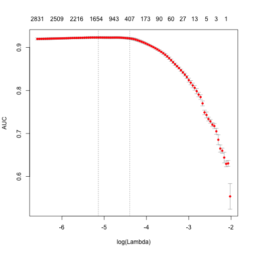
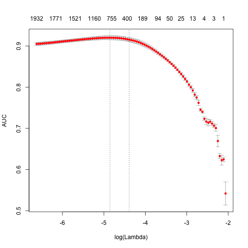
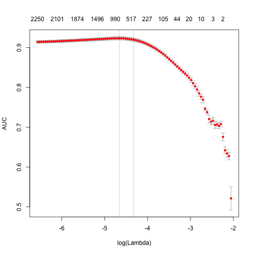
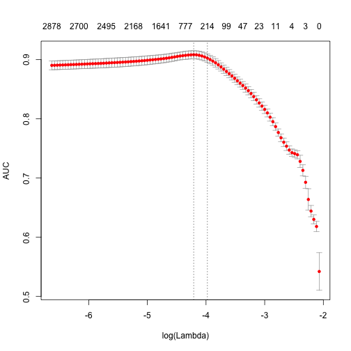

updated 2016-10-07 - see post with updated tutorial for text2vec 0.4
In the last weeks I have actively worked on text2vec (formerly tmlite) - R package, which provides tools for fast text vectorization and state-of-the art word embeddings.
This project is an experiment for me - what can a single person do in a particular area? After these hard weeks, I believe, he can do a lot.
There are a lot of changes from my previous introduction post, and I want to highlight few of them:
- Package was renamed to text2vec, because, I believe, this name better reflects its functionality.
- New API. More clean, more concise.
- GloVe word embeddings. Training is fully parallelized - asynchronous SGD with adaptive learning rate (AdaGrad). Works on all platforms, including windows.
- Added ngram feature to vectorization. Now it is very easy to build Document-Term matrix, using arbitrary
ngramsinstead of simpleunigrams. - Switched to
MurmurHash3for feature hashing and addsigned_hashoption, which can reduce the effect of collisions. - Now text2vec uses regular exressions engine from
stringrpackage (which is built on top ofstringi). Nowregexp_tokenizermuch is more fast and robust. Simpleword_tokenizeris also provided.
In this post I’ll focus on text vectorization tools provided by text2vec. Also, it will be a base for a text2vec vignette. I’ll write another post about GloVe next week, don’t miss it.
Plese, don’t forgive to install text2vec first:
devtools::install_github('dselivanov/text2vec')
Features
text2vec is a package for which the main goal is to provide an efficient framework with concise API for text analysis and natural language processing (NLP) in R. It is inspired by gensim - an excellent python library for NLP.
Core functionality
At the moment we cover two following topics:
- Fast text vectorization on arbitrary n-grams.
- using vocabulary
- using feature hashing
- State-of-the-art GloVe word embeddings.
Efficiency
- The core of the functionality is carefully written in C++. Also this means text2vec is memory friendly.
- Some parts (GloVe training) are fully parallelized using an excellent RcppParallel package. This means, parallel features work on OS X, Linux, Windows and Solaris(x86) without any additinal tuning/hacking/tricks.
- Streaming API, this means users don’t have to load all the data into RAM. text2vec allows processing streams of chunks.
API
- Built around iterator abstraction.
- Concise, provides only a few functions, which do their job well.
- Don’t (and probably will not in future) provide trivial very high-level functions.
Terminology and what is under the hood
As stated before, text2vec is built around streaming API and iterators, which allows the constructin of the corpus from iterable objects. Here we touched 2 main concepts:
- Corpus. In text2vec it is an object, which contains tokens and other information / metainformation which is used for text vectorization and other processing. We can be efficiently insert documents into corpus, because, technically, Corpus is an C++ class, wrapped with Rcpp-modules as reference class (which has reference semantics!). Usually user should not care about this, but should keep in mind nature of such objects. Particularly important, that user have to remember, that he can’t save/serialize such objects using R’s
save*()methods. But good news is that he can easily and efficiently extract corresponding R objects from corpus and work with them in a usual way. - Iterators. If you are not familliar with them in
R'scontext, I highly recommend to review vignettes of iterators package. A big advantage of this abstraction is that it allows us to be agnostic of type of input - we can transparently change it by just providing correct iterator.
Text vectorization
Historically, most of the text-mining and NLP modelling was related to Bag-of-words or Bag-of-ngrams models. Despite of simplicity, these models usually demonstrates good performance on text categorization/classification tasks. But, in contrast to theoretical simplicity and practical efficiency, building bag-of-words models involves technical challenges. Especially within R framework, because of its typical copy-on-modify semantics.
Pipeline
Lets briefly review some details of typical analysis pipeline:
- Usually reseacher have to construct Document-Term matrix (DTM) from imput documents. Or in other words, vectorize text - create mapping from words/ngrams to vector space.
- Fit model on this DTM. This can include:
- text classification
- topic modeling
- …
- Tune, validate model.
- Apply model on new data.
Here we will discuss mostly first stage. Underlying texts can take a lot of space, but vectorized ones usually not, because they are stored in form of sparse matrices. In R it is not very easy (from reason above - copy-on-modify semantics) to iteratively grow DTM. So construction of such objects, even for small collections of documents, can become serious hedache for analysts and researchers. It involves reading the whole collection of text documents into RAM and process it as single vector, which easily increase memory consumption by factor of 2 to 4 (to tell the truth, this is quite optimistically). Fortunately, there is a better, text2vec way. Lets check how it works on simple example.
Sentiment analysis on IMDB moview review dataset
text2vec provides movie_review dataset. It consists of 25000 movie review, each of which marked ad positive or negative.
library(text2vec)
Warning: package 'text2vec' was built under R version 3.2.3
Loading required package: methods
data("movie_review")
# str(movie_review, nchar.max = 20, width = 80, strict.width = 'wrap')
To represent documents in vector space, first of all we have to create term -> term_id mappings. We use termin term instead of word, because actually it can be arbitrary ngram, not just single word. Having set of documents we want represent them as sparse matrix, where each row should corresponds to document and each column should corresponds to term. This can be done in 2 ways: using vocabulary, or by feature hashing (hashing trick).
Vocabulary based vectorization
Lets examine the first choice. He we collect unique terms from all documents and mark them with unique_id. vocabulary() function designed specially for this purpose.
it <- itoken(movie_review[['review']], preprocess_function = tolower,
tokenizer = word_tokenizer, chunks_number = 10, progessbar = F)
# using unigrams here
t1 <- Sys.time()
vocab <- vocabulary(src = it, ngram = c(1L, 1L))
print( difftime( Sys.time(), t1, units = 'sec'))
Time difference of 0.717519 secs
# str(vocab, nchar.max = 20, width = 80, strict.width = 'wrap')
Now we can costruct DTM. Again, since all functions related to corpus construction have streaming API, we have to create iterator and provide it to create_vocab_corpus function:
it <- itoken(movie_review[['review']], preprocess_function = tolower,
tokenizer = word_tokenizer, chunks_number = 10, progessbar = F)
corpus <- create_vocab_corpus(it, vocabulary = vocab)
dtm <- get_dtm(corpus)
We got DTM matrix. Lets check its dimension:
dim(dtm)
[1] 5000 42652As you can see, it has 5000 rows (equal to number of documents) and 42652 columns (equal to number of unique terms). Now we are ready to fit our first model. Here we will use `glmnet` package to fit *logistic regression* with *L1* penalty. ```r library(glmnet) t1 <- Sys.time() fit <- cv.glmnet(x = dtm, y = movie_review[['sentiment']], family = 'binomial', # lasso penalty alpha = 1, # interested area unded ROC curve type.measure = "auc", # 5-fold cross-validation nfolds = 5, # high value, less accurate, but faster training thresh = 1e-3, # again lower number iterations for faster training # in this vignette maxit = 1e3) print( difftime( Sys.time(), t1, units = 'sec')) ```
Time difference of 4.131704 secs
plot(fit)

print (paste("max AUC = ", round(max(fit$cvm), 4)))
[1] "max AUC = 0.9231"
Note, that training time is quite high. We can reduce it and also significantly improve accuracy.
Pruning vocabulary
We will prune our vocabulary. For example we can find words “a”, “the”, “in” in almost all documents, but actually they don’t give any useful information. Usually they called stop words. But in contrast to them, corpus also contains very uncommon terms, which contained only in few documents. These terms also useless, because we don’t have sufficient statistics for them. Here we will filter them out:
# remove very common and uncommon words
pruned_vocab <- prune_vocabulary(vocab, term_count_min = 10,
doc_proportion_max = 0.5, doc_proportion_min = 0.001)
it <- itoken(movie_review[['review']], preprocess_function = tolower,
tokenizer = word_tokenizer, chunks_number = 10, progessbar = F)
corpus <- create_vocab_corpus(it, vocabulary = pruned_vocab)
dtm <- get_dtm(corpus)
TF-IDF
Also we can (and usually should!) apply TF-IDF transofrmation, which will increase weight for document-specific terms and decrease weight for widely used terms:
dtm <- dtm %>% tfidf_transformer
idf scaling matrix not provided, calculating it form input matrix
dim(dtm)
[1] 5000 7663
Now, lets fit out model again:
t1 <- Sys.time()
fit <- cv.glmnet(x = dtm, y = movie_review[['sentiment']],
family = 'binomial',
# lasso penalty
alpha = 1,
# interested area unded ROC curve
type.measure = "auc",
# 5-fold cross-validation
nfolds = 5,
# high value, less accurate, but faster training
thresh = 1e-3,
# again lower number iterations for faster training
# in this vignette
maxit = 1e3)
print( difftime( Sys.time(), t1, units = 'sec'))
Time difference of 2.492776 secs
plot(fit)

print (paste("max AUC = ", round(max(fit$cvm), 4)))
[1] "max AUC = 0.9201"
As you can seem we obtain faster training, and larger AUC.
Can we do better?
Also we can try to use ngrams instead of words. We will use up to 3-ngrams:
it <- itoken(movie_review[['review']], preprocess_function = tolower,
tokenizer = word_tokenizer, chunks_number = 10, progessbar = F)
t1 <- Sys.time()
vocab <- vocabulary(src = it, ngram = c(1L, 3L))
print( difftime( Sys.time(), t1, units = 'sec'))
Time difference of 4.287837 secs
vocab <- vocab %>%
prune_vocabulary(term_count_min = 10, doc_proportion_max = 0.5, doc_proportion_min = 0.001)
it <- itoken(movie_review[['review']], preprocess_function = tolower,
tokenizer = word_tokenizer, chunks_number = 10, progessbar = F)
corpus <- create_vocab_corpus(it, vocabulary = vocab)
print( difftime( Sys.time(), t1, units = 'sec'))
Time difference of 6.014991 secs
dtm <- corpus %>%
get_dtm %>%
tfidf_transformer
idf scaling matrix not provided, calculating it form input matrix
dim(dtm)
[1] 5000 27226
t1 <- Sys.time()
fit <- cv.glmnet(x = dtm, y = movie_review[['sentiment']],
family = 'binomial',
# lasso penalty
alpha = 1,
# interested area unded ROC curve
type.measure = "auc",
# 5-fold cross-validation
nfolds = 5,
# high value, less accurate, but faster training
thresh = 1e-3,
# again lower number iterations for faster training
# in this vignette
maxit = 1e3)
print( difftime( Sys.time(), t1, units = 'sec'))
Time difference of 4.315254 secs
plot(fit)

print (paste("max AUC = ", round(max(fit$cvm), 4)))
[1] "max AUC = 0.9233"
So improved our model a little bit more. I’m leaving further tuning for the reader.
Feature hashing
If you didn’t hear anything about Feature hashing (or hashing trick), I recommend to start with wikipedia article and after that review original paper by Yahoo! research team. This techique is very fast - we don’t perform look up over associative array. But another benefit is very low memory footprint - we can map arbitrary number of features into much more compact space. This method was popularized by Yahoo and widely used in Vowpal Wabbit.
Here I will demonstrate, how to use feature hashing in text2vec:
t1 <- Sys.time()
it <- itoken(movie_review[['review']], preprocess_function = tolower,
tokenizer = word_tokenizer, chunks_number = 10, progessbar = F)
fh <- feature_hasher(hash_size = 2**18, ngram = c(1L, 3L))
corpus <- create_hash_corpus(it, feature_hasher = fh)
print( difftime( Sys.time(), t1, units = 'sec'))
Time difference of 2.135305 secs
dtm <- corpus %>%
get_dtm %>%
tfidf_transformer
idf scaling matrix not provided, calculating it form input matrix
dim(dtm)
[1] 5000 262144
t1 <- Sys.time()
fit <- cv.glmnet(x = dtm, y = movie_review[['sentiment']],
family = 'binomial',
# lasso penalty
alpha = 1,
# interested area unded ROC curve
type.measure = "auc",
# 5-fold cross-validation
nfolds = 5,
# high value, less accurate, but faster training
thresh = 1e-3,
# again lower number iterations for faster training
# in this vignette
maxit = 1e3)
print( difftime( Sys.time(), t1, units = 'sec'))
Time difference of 13.08104 secs
plot(fit)

print (paste("max AUC = ", round(max(fit$cvm), 4)))
[1] "max AUC = 0.9083"
As you can see, we got a little bit worse AUC, but DTM construction time was considerably lower. On large collections of documents this can become a serious argument.